Nexus contact sheet
53 of 60 seed assemblies, each at its default settings, seen from the front right above (the 3D view's own fit). Made by node scripts/sheet.cjs.
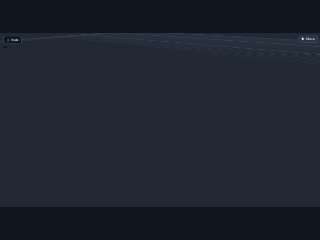
seed.robot-arm53 pieces seed.pan-tilt21 pieces
seed.pan-tilt21 pieces seed.gripper12 pieces
seed.gripper12 pieces seed.quadcopter50 pieces
seed.quadcopter50 pieces seed.wheeled-base21 pieces
seed.wheeled-base21 pieces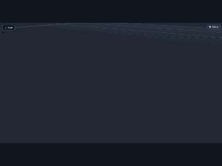
seed.linear-axis14 pieces seed.car-chassis51 pieces
seed.car-chassis51 pieces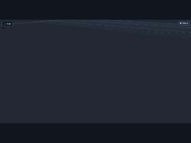
seed.conveyor52 pieces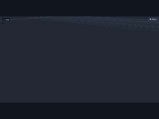
seed.xy-gantry33 pieces seed.table5 pieces
seed.table5 pieces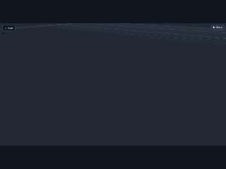
seed.crane11 pieces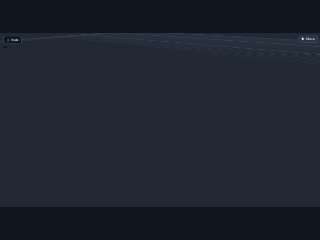
seed.shelf7 pieces seed.lamp-arm13 pieces
seed.lamp-arm13 pieces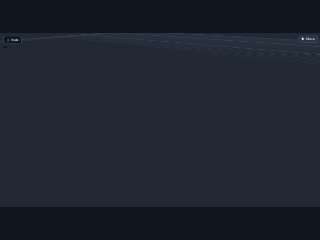
seed.pump-loop10 pieces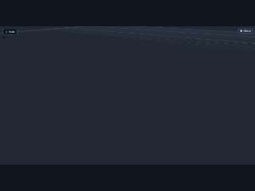
seed.wind-turbine14 pieces seed.boat19 pieces
seed.boat19 pieces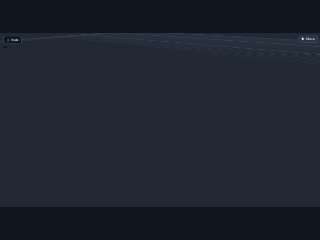
seed.tripod5 pieces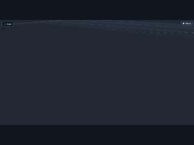
seed.camera5 pieces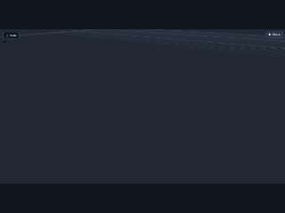
seed.quadruped94 pieces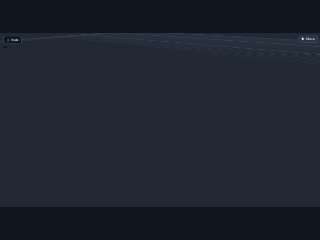
seed.hexapod140 pieces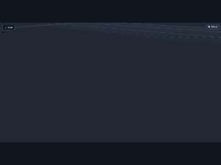
seed.leg23 piecesseed.winch11 pieces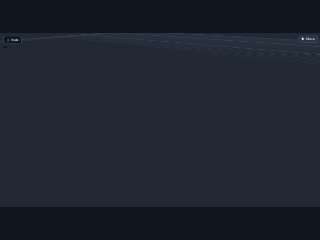
seed.pump11 pieces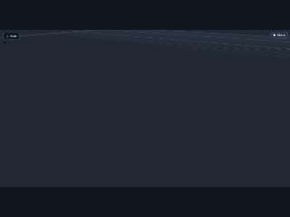
seed.truck17 pieces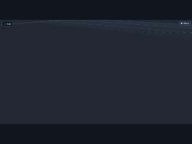
seed.chair8 pieces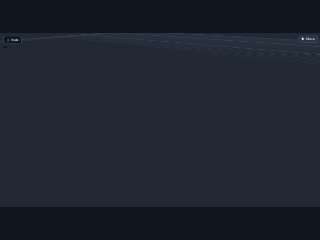
seed.desk11 pieces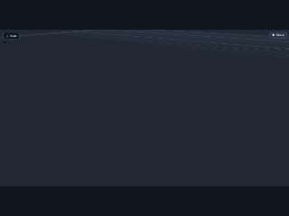
seed.bed-frame12 pieces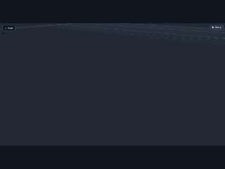
seed.window9 pieces seed.door12 pieces
seed.door12 pieces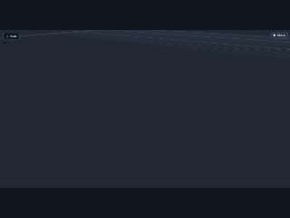
seed.stud-wall11 pieces seed.kart20 pieces
seed.kart20 pieces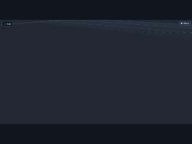
seed.fence16 pieces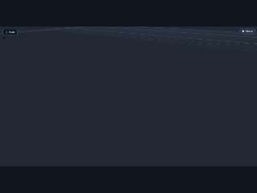
seed.trailer14 pieces seed.mast11 pieces
seed.mast11 pieces seed.wheelbarrow12 pieces
seed.wheelbarrow12 pieces seed.solar-panel66 pieces
seed.solar-panel66 pieces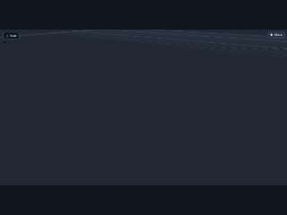
seed.bicycle20 pieces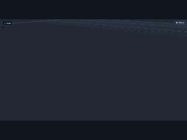
seed.satellite-dish5 pieces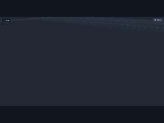
seed.helicopter17 pieces seed.forklift18 pieces
seed.forklift18 pieces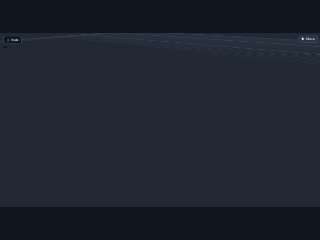
seed.excavator17 pieces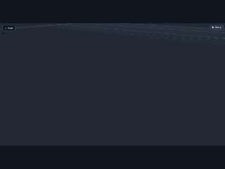
seed.train27 pieces seed.printer-3d38 pieces
seed.printer-3d38 pieces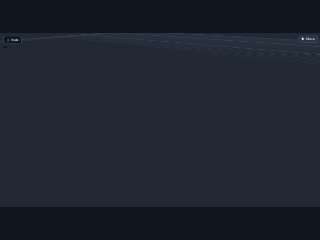
seed.drill-press6 pieces seed.ceiling-fan11 pieces
seed.ceiling-fan11 pieces seed.lathe7 pieces
seed.lathe7 pieces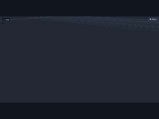
seed.lawnmower16 pieces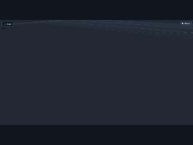
seed.scooter17 pieces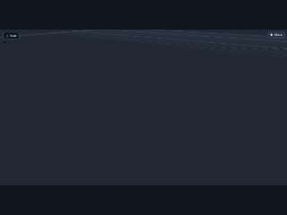
seed.tractor14 pieces seed.motorcycle15 pieces
seed.motorcycle15 pieces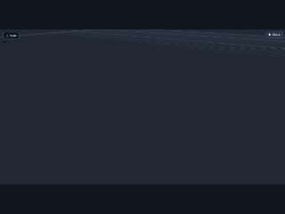
seed.bus12 pieces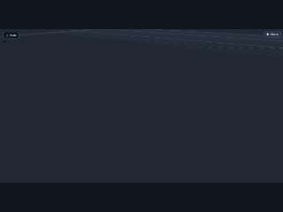
seed.robot-dog97 pieces seed.van12 pieces
seed.van12 pieces- 7 did not open:
seed.spring-checked: it made no block (ok)seed.motor-dc: it made no block (ok)seed.bolted-two: waiting on what it holds (plates stacked, a part on a plate)seed.pack-two: it made no block (ok)seed.bolted-four: waiting on what it holds (plates stacked, a part on a plate)seed.standoffs: waiting on what stands on the standoffs (a dev board, a PCB)seed.boxed: waiting on what goes into the box (cells stacked, a board, a switch)